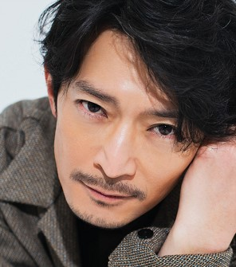
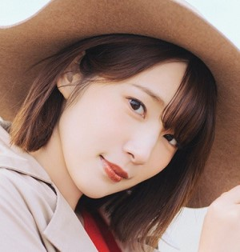

VOICE ACTOR
小学生のころから大好きな
声優さんをご紹介します。
中学生のころは声優さんに憧れて
日本ナレーション演技研究所に通っていました。
津田 健次郎さん

私が初めて好きになった声優さんで、小学4年生のころからずっと好きです。
津田さんが声を担当されるキャラにことごとくハマってきました。
もはや、そのキャラが好きなのか、津田さんが声を担当されているから好きなのかわからなくなってきました（笑）
放送部の子にお願いして、給食のときに津田さんのキャラソンを流してもらったりしていました。
初めてイベントに参加したのも津田さんの誕生日イベントでした。
そのイベントで津田さんからいただいた直筆サイン入りのお写真は、今でも大事に飾ってあります。
朝ドラ「エール」でナレーションを務められてから、テレビに出演されることも多くなり、
ドラマ「最愛」に刑事役で出演されたりと今まで以上に活躍されており,
ファンとして嬉しい限りです。
津田さんは、アニメ「呪術廻戦」で七海建人役も務められています。
アニメも面白いですが、七海ことナナミンが本当に私の大好きなキャラなので、
ぜひ、みなさんにもご覧いただけると嬉しいです。
【代表作】海馬瀬人/遊☆戯☆王デュエルモンスターズ、乾貞治/テニスの王子様、風間千景/薄桜鬼、
周防尊/K、オーバーホール/僕のヒーローアカデミア、七海健人/呪術廻戦 etc.
内田 真礼さん

私が1番好きな女性声優さんです。
真礼さんは、見た目が可愛いだけでなく、歌も上手で、性格も明るく活発で、憧れの女性の一人です。
演技力も素晴らしく、アニメ「約束のネバーランド」でノーマン役を務められた際には、真礼さんだとわかないほど少年らしい声
でした。ぜひ、一度聞いてみてください。
また、真礼さんの弟の雄馬さんも声優をやられており、お二人はとても仲が良く、
ラジオやゲームを二人でやられているのを見ているとても微笑ましいです。
【代表作】小鳥遊六花/中二病でも恋がしたい！、壱岐ひより/ノラガミ、吉岡双葉/アオハライド、
シャロ〈桐間紗路〉/ご注文はうさぎですか?、ノーマン/約束のネバーランド、
乙女ゲームの破滅フラグしかない悪役令嬢に転生してしまった…（カタリナ･クラエス） etc.